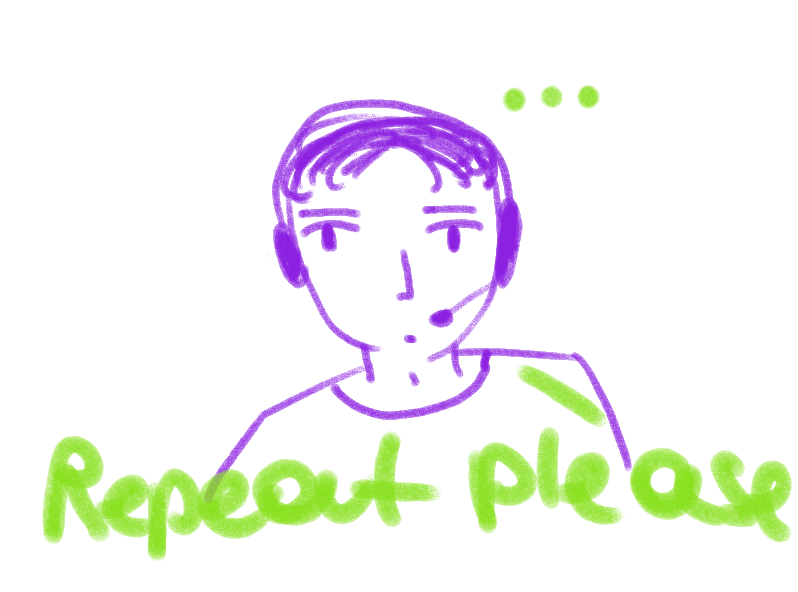
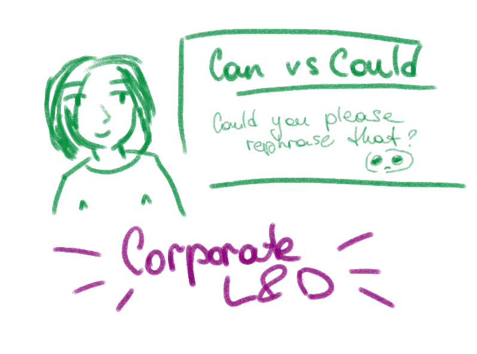
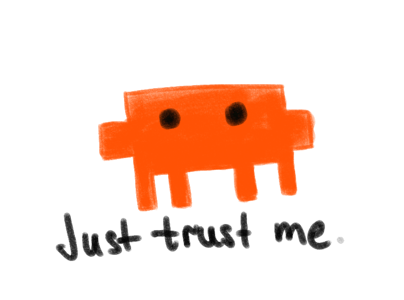

— Давай начнем с базы. Почему вообще в IT, где все, казалось бы, общаются на одном техническом языке, возникает так много недопониманий с иностранным заказчиком? В чем главная причина этого "lost in translation" (трудностей перевода)?
Это интересный вопрос. Ключевое выражение здесь - “технический язык”. Вижу на своей практике, что многие разработчики учат английский просто… читая документацию. Один раз разговорившись с сотрудником я задала вопрос, а-ля как он начал учить язык? Оказалось, что это self-taught случай, когда человек получил все свои знания об английском исключительно (!) из прочтения документации. И, признаюсь, тут мой мир перевернулся, потому что мы вполне неплохо с ним поговорили. Понимали друг друга, да, не без косяков, но ведь коммуникативный акт состоялся и был успешным! В моей голове сразу возникли идеи по типу “А я ведь могу ему помочь. Взять бы его, да и допилить по базе, и в целом вышло бы очень и очень даже”, - потенциал здесь было видно издалека.

Но вот в чем загвоздка: говорил он бегло больше про стек, проекты. А вот small talk уже подкачал, как и обсуждение будничных вещей по типу “какие твои любимые игры?” И вот здесь мы и начинаем заходить в проблемную зону. Вы когда-нибудь задумывались сколько всего надо знать чтобы просто произвести адекватное первое впечатление на иностранного клиента на созвоне? А ведь это одна из тех вещей, которую ну никак нельзя упускать из вида. Для нас, русскоговорящих людей, при общении это все выглядит не особо важно. В приоритете скорее донести какую-то информацию, презентовать себя. А вот как ответить на How are you doing? мы уже скорее забиваем. И зря, скажу я вам.
Еще одной вытекающей из этой ветки проблемой является отсутствие навыка сглаживания углов, как не звучать too harsh и выглядеть вежливым в глазах собеседника. Да, понятно, что многие не знают даже о разнице между Can/Could в просьбах и звучат ну совсем прямолинейно - на мой взгляд, это простительно для разработчика, но а если речь идет о коммуникаторе или условном Tech Lead? Здесь уже вопрос встает ребром.

Наименьшей проблемой, считаю, является буквальный перевод с русского на английский - на это обращать внимание скорее НЕ будут. А вот что точно режет слух, так это долгие паузы между фразами и словами. Именно с запросом на помощь с этим я работала на протяжении месяца с одним из сотрудников - мы проводили каждодневные созвоны и… просто говорили. Сначала делали мокапы интервью, на них я выясняла в чем вообще подоплека этого и где кроется причина. Потом уже обсуждали проекты, смотрели видосы, вспоминали лексику. В один день мною было принято такое решение: записываем наш звонок и потом мой собеседник наедине с собой уже рефлексирует над ним. Ведь я знаю, как важно иногда бывает просто послушать себя со стороны. И знаете что? Это и был переломный момент. Так что такую практику могу смело рекомендовать брать на вооружение :) Признаюсь, за весь мой опыт преподавания это был самый интересный и один из самых успешных кейсов. Когда я поняла, что он был успешным? Когда в один из синков мой собеседник зашел и мы начали… со small-talk. Причем вообще неожиданно для меня. На протяжении 20+ минут мы обсуждали рабочие обязанности друг друга, ситуацию на рынке труда, как приходится тюнить CV разработчиков для сейлов. Признаюсь, в тот момент было по-настоящему радостно за него, ведь он буквально перешагнул языковой барьер, который все это время мешал звучать бойко и уверенно. Итогом стало успешно пройденное интервью на английском с представителем клиента. И я считаю это нашей совместной заслугой и результатом нашей совместной слаженной работы.

— Очень частая история на созвонах: клиент объясняет фичу, разработчики (или лид) кивают, говорят "Yes, yes, no problem", а через неделю на демо выясняется, что поняли вообще не то. Почему наши инженеры так боятся переспрашивать, уточнять детали или говорить слово «Нет/Я не понял» иностранцу?
В первую очередь потому, что боятся показать себя в худшем свете, ведь это так сложно - сказать, что ты что-то не расслышал или не знаешь, как переводится эта фраза. Зачастую это просто стыдно сделать. И это абсолютно нормально, но на мой взгляд, гораздо более стыдно потом краснеть на демо :)
Вторая причина: они просто не знают как переспросить, расспросить подробнее, погрузиться в детали. К тому же каждый такой созвон - это pure стресс для человека с условным B1. И неудивительно, что от этого стресса так хочется побыстрее убежать.
Как фиксить? Либо взять человека на L&D, который будет точечно прорабатывать такие вопросы, либо проводить тренинги, вебинары, семинары, конференции - в общем, все, что на нынешнем рынке предлагают специалисты.

— Бывает ли так, что одно и то же английское слово или фраза для нашего человека значит одно, а для иностранного заказчика — совсем другое, и из-за этого возникают проблемы? И чтобы резюмировать наш разговор: дай 1-2 главных совета инженерам, которые прямо завтра пойдут на созвон с клиентом и очень сильно волнуются. Что им сделать, чтобы созвон прошел успешно?
Конечно бывает. По каким причинам? В основном либо потому, что не хватает словарного запаса, либо где-то в голове каким-то образом отложилось неправильное значение, либо опять же — буквальный дословный перевод с русского на английский. Вариантов возникновения на этой почве проблем просто немеренное количество. А особенно здесь страдает письменная коммуникация. Мой совет: не умеешь писать письма? Попроси помочь с этим LLM, не забивай на это, иначе можешь произвести очень плохое впечатление.

Как подготовиться к созвону? На самом деле, универсальных способов нет — у каждого свои проблемы и боли. Кто-то уверен в себе и говорит бегло без страха с кучей грамматических и стилистических ошибок — и его будут слушать и слышать! Вы не представляете, насколько такой человек звучит живо и как на все неточности закрывают глаза нейтивы. А кто-то подбирает каждое слово и переводит его в голове с русского на английский, делая большие паузы. Зато натренированная по Murphy грамматика у него идеально выверена и за нее можно только хвалить. Так что могу дать лишь общий совет: не бояться делать ошибки и пробовать применять все ранее изученное на практике. Больше спрашивайте, задавайте вопросы. Не забывайте про нетехническую составляющую и что на этом созвоне также есть место и простому человескому общению на тему погоды или просмотра футбола. Настройтесь на иноязычную речь, посмотрите видос на интересную вам тему перед созвоном, буквально 5-10 минут — этого уже будет достаточно, чтобы стартовать было в разы проще.